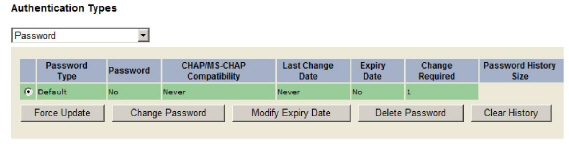
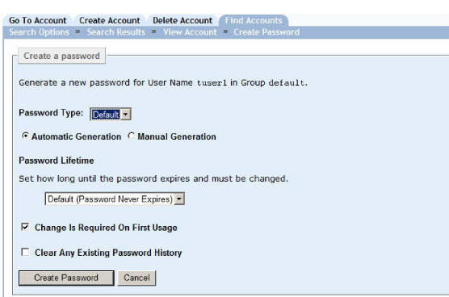
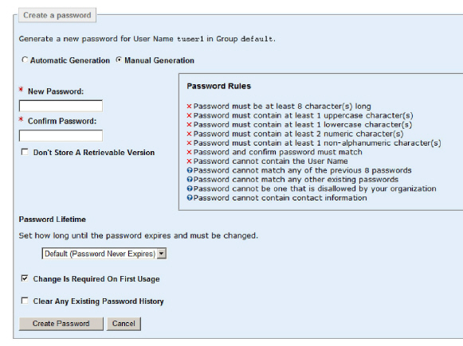

|
IdentityGuard Server 13.0 Administration Guide |
|
IdentityGuard Server 13.0 Administration Guide |
An administrator with the userPasswordCreate and userPasswordView permissions can create or change the password for any user. The procedures to create and change passwords are nearly identical.
To create or change a password for a user
1. Log in to the Administration interface (Log in and out of the Administration interface).
2. Click User Accounts on the menu bar.
3. Find a specific user in one of two ways:
● use the Go To Account tab. For instructions, see the topics in Searching for user information .
● use the Find Accounts tab
The Search Results page appears.
4. Select a user for the search results. The users account page appears.
5. Under Authentication Types on the user’s Account Information pane, click Password.
Password information and applicable command buttons appear (unless the user has no passwords).

6. Do one of the following:
● If the user has no password, click Create Password.
The Create Password page appears.
● If the user has just one password, click Change Password.
The Change Password page appears.
● If the user has multiple passwords, select one and click Change Password.
The Change Password page appears.
You have two choices for password creation, automatic or manual.

7. From the Password Type drop-down list, pick the password policy to use. The list includes Default and any named passwords defined in password policy. Where one or more user passwords already exist, this list includes only the names of password policies not already applied to the user. A user cannot have more than one password with the same name.
8. To have Entrust IdentityGuard create the password, select Automatic Generation.
For details, see Autogenerated passwords.
9. To create a password manually, select Manual Generation.
Several options appear as part of the manual option.

The Password Rules list reflects the policy set for the selected password type.
10. In the New Password field, enter a password that conforms to the rules displayed. As each rule is met, the red X is replaced by a green check mark. If you break a rule with a green check mark, a red X appears.
11. Repeat the password in the Confirm Password field.
12. Select Don’t Store A Retrievable Version if you do not want the password displayed on the Password pane for the user. (For more information, see Retrievable passwords.)
13. For all passwords, select a password expiry period under Password Lifetime. The default is set in the password policy.
● Select Set Password Lifetime from the list to specify an exact number of days or months.
● Select Set Password Expiry Date from the list to specify an exact date.
When passwords expire, users can still authenticate with it but they must enter a new one before continuing.
Administrators with both the userPasswordOverridePolicy and userPasswordSet permissions can change the password expiry date to extend it or reduce it for users under their control.
14. Select Change Is Required On Next Usage or Change Is Required On First Usage to force the user to enter a new password at the next or first login. This keeps the new user’s password private.
You can also set the updatePassword field of a bulk password operation to true to require a password change. (Also see Force a password update.)
15. For a new password only, the Clear Any Existing Password History option appears. It is not needed for a new user, but may be useful for later password updates. As set by default policy, a new password cannot be the same as any of the last eight passwords used by that person. Selecting this option, clears the history and allows the reuse of a recent password.
16. Click Create Password or Change Password.
The Account Information pane reappears showing the new password information.